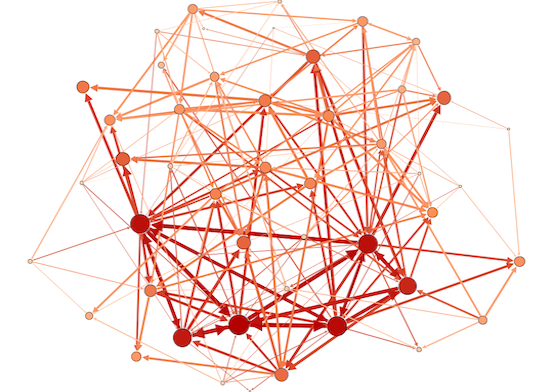

What I used to do

Douglas Ashton
|
|

|
|  |
 https://www.youtube.com/playlist?list=PLEiHoEYBhJ0C64aDoOJwpVM41F7RX28ZR https://www.youtube.com/playlist?list=PLEiHoEYBhJ0C64aDoOJwpVM41F7RX28ZR
|
 Elaine Bettany (Bath to Expedia)
Elaine Bettany (Bath to Expedia) Patrick Varilly (Cambridge to Data Minded [Consultancy])
Patrick Varilly (Cambridge to Data Minded [Consultancy]) Yael Elmatad (Berkeley to Tapad)
Yael Elmatad (Berkeley to Tapad) Aaron Keys (Michigan to Airbnb)
Aaron Keys (Michigan to Airbnb)